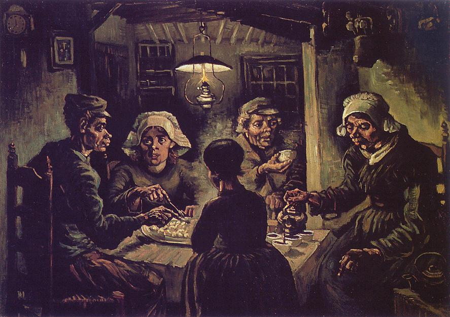
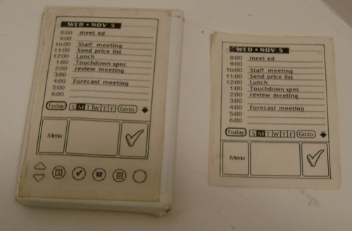

Rails Prototyping
Building cool stuff quickly
Pascal Rettig | @cykod
Rails Prototyping
What is prototyping?
A Prototype is a model to be replicated or learned from.
(Paraphrased from Wikipedia)
Prototype
≠
Final Product
Why Prototype?
Why Prototype
Does anyone care?
Does design, User Flow, Interaction work?
What Architecture - Tools, DBs, Languages
Also, you don't know
what you don't know..
The Faster you can
learn the better
Sound Familiar?

Artists do Studies
Artists do Studies

to evaluate composition, lighting, texture
Yet developers...

... inflict unspeakable acts of UI on their users all the time.
Prototyping is...
..the pivotal activity that structures innovation and collaboration and creativity in design.
- Scott Klemmer, Stanford
Developer as artist
Prototypes = Artist studies for Developers
Make more pots
A pottery class was divided into two groups. Half the class was graded solely on the quantity of work, as weighed on a bathroom scale, and half solely on the quality of their best piece.
Result: the works of highest quality were all produced by the group being graded for quantity.
- Art and Fear (via Coding Horror)
Avoid Best-Practicitis
Aka over-analysis-paralysis
How to attack a prototype?
#1: Build Only what's needed

#2: Dispose with Ceremony
Pick the Best Tools* for the job and get it done as quickly as possible.
(No authentication, data model, styling as necessary)
#3: Iterate, Iterate, Iterate
Get *something* up ASAP
#4: Be ready to throw it all away
One prototype might not be able to test everything
#5: Decide beforehand what's production code
Make sure you apply the normal rigor to those parts
Rails Prototyping
Rails Prototyping
The first rule of Rails prototyping...
Is make sure you need Rails
Rails is Kinda heavy
And you'll be tempted to
keep your prototype
Alternatives to Rails
Fake the data with static JSON - Go front end only (JS MVC)
Use localstorage
Use a cloud-based NoSQL DB in the sky like Parse or Kinvey
Set up your own CORS-enabled end-point
Fake it w/ HTML5
Instagram-killer prototype
You may still need Rails...
The One True Way®
to Prototype Rails is...
Whatever works for you
DB, JS Framework, Gems, etc
My List - Backend:
-
Database - MongoDB + Mongoid
Widely available, easy to deploy, no migrations (1.9.3+)
-
Authentication - Leave out or Devise (w/ OmniAuth if necessary)
Batteries included
-
Controllers - inherited_resources, has_scope, kaminari
Minimize typing
-
Admin - rails_admin (if necessary)
Works with Mongoid. Easy to set up.
My List - Front end:
-
Views & Stylesheets - HAML + SASS
Less typing. Well supported in generators.
-
Design and Styling - Twitter Bootstrap
twitter-bootstrap-rails provides generators and easy integration
-
Forms - Formtastic + formtastic-bootstrap
Nice forms out of the box
-
Javascript - Backbone w/ rails-backbone
No need to download or install anything
Where's your testing
framework Jackass?
RSpec w/ only model tests,
or leave it out for the prototype.
If it's dangerous to go alone,
Gemfile
# In Assets
gem "therubyracer"
gem "less-rails"
gem "twitter-bootstrap-rails"
...
gem 'jquery-rails'
gem 'mongoid'
gem 'haml'
gem 'haml-rails'
gem 'therubyracer'
gem 'formtastic'
gem "formtastic-bootstrap"
gem 'rails-backbone'
gem 'devise'
gem 'inherited_resources'
gem 'has_scope'
gem 'kaminari'
gem 'rails_admin'
New
rails new proto -T -O --skip-bundle
Config
# in config/application.rb
config.generators do |g|
g.form_builder :formtastic
g.template_engine :haml
end
Generate up all the things
# Mongoid
rails generate mongoid:config
# Kill the default index.html, layout application.html.erb
rm public/index.html
rm app/views/layouts/application.html.erb
# Twitter Bootstrap
rails g bootstrap:install
rails g bootstrap:layout application fluid
# Generate a Home page
# (need to change routes.rb to: root to: "page#home")
rails g controller Page home
# Devise w/ Mongoid
rails generate devise:install
rails generate devise User
rails generate devise Admin
# Create a Resource (we'll do contacts)
rails g resource contacts name:string email:string phone:string
# Bootstrap Rails Backbone
rails g backbone:install
# Create a front-end scaffold
rails g backbone:scaffold Contact name:string email:string phone:string
Make Mongoid play nice with Backbone
config/initializers/mongo.rb
module Mongoid
module Document
def as_json(options={})
attrs = super(options)
attrs["id"] = self.persisted? ? self._id : nil
attrs
end
end
end
Wire up our models and controller
app/controllers/contact_controller.rb
class ContactsController < ApplicationController
inherit_resources
before_filter :authenticate_user!
respond_to :html, only: [ :index]
respond_to :json
protected
def begin_of_association_chain
current_user
end
end
app/models/user.rb
# Add to bottom
has_many :contacts
app/models/user.rb
# Add to bottom
belongs_to :user, index: true
Get us a spot for in-page JavaScript
app/views/layouts/application.html.haml
...
/
Javascripts
\==================================================
/ Placed at the end of the document so the pages load faster
= javascript_include_tag "application"
= yield :end_body
Create a Contacts index template
in app/views/contacts/index.html.haml
#contacts
- content_for :end_body do
:javascript
$(function() {
window.router = new Proto.Routers.ContactsRouter({contacts: #{@contacts.to_json.html_safe}});
Backbone.history.start();
});
Always Be Building
Thanks!
Pascal Rettig | @cykod